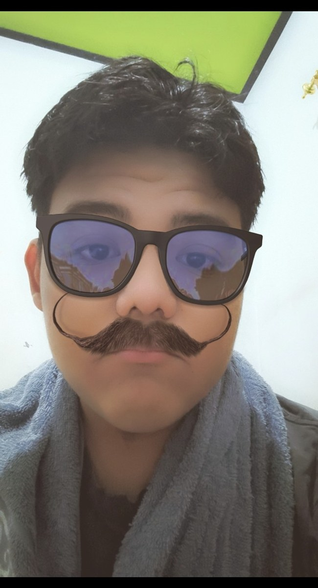

👋 Halo, kenalan yuk!
Nama saya Ibnu Zaki Hasan. Saya pelajar yang tertarik dengan teknologi. Saya sedang mempelajari coding dan AI serta senang mencoba membuat aplikasi dan website sendiri.
Pelajar SMK yang tertarik dengan coding, kecerdasan buatan, dan pembuatan website. Saya suka mengubah rasa penasaran menjadi proyek digital.

Ibnu Zaki Hasan
Student · Coding enthusiast
Perkenalan singkat tentang diri dan pendidikan.
Nama saya Ibnu Zaki Hasan. Saya pelajar yang tertarik dengan teknologi. Saya sedang mempelajari coding dan AI serta senang mencoba membuat aplikasi dan website sendiri.
Coding adalah proses menulis instruksi agar komputer menjalankan tugas. Coding digunakan untuk membuat program, aplikasi, game, dan website.
Bahasa pemrograman untuk pemula, otomatisasi, analisis data, AI, dan computer vision.
HTML membentuk struktur, CSS mengatur tampilan, dan JavaScript menambahkan interaksi.
Mencari penyebab error, menguji solusi, dan memperbaiki kode.
nama = "Ibnu"
print("Halo,", nama)
print("Selamat belajar coding!")AI membantu komputer mengenali pola, memahami bahasa, menganalisis informasi, dan menghasilkan konten.
Membantu belajar, mencari ide, merangkum informasi, menerjemahkan bahasa, dan memperbaiki kode.
AI bisa salah memberi informasi, menghasilkan konten palsu, menimbulkan masalah privasi, dan membuat pengguna terlalu bergantung.
Asisten virtual untuk membantu pertanyaan tentang coding, AI, pelajaran, ide website, dan topik umum.
Kumpulan eksperimen, karya, dan perjalanan saya dalam mempelajari teknologi.
Mengenali gestur tangan melalui webcam dan menghasilkan suara sesuai gestur.
Eksperimen pelacakan gerakan tangan dan efek visual neon interaktif.
Program menghitung luas segitiga dan persegi panjang.
Website ucapan ulang tahun dengan hadiah dan pesan interaktif.
Eksperimen animasi teks dengan pengaturan waktu mengikuti musik.
Partikel membentuk GALAXY, I LOVE YOU, Saturnus, dan ♥️ dengan gerakan tangan.
Konsep asisten virtual untuk belajar teknologi dan menjawab pertanyaan.
Website pribadi untuk menampilkan profil dan karya digital.
7 project ditampilkan
Anda menggunakan X, bot menggunakan O. Coba menang melawan komputer!
Giliran Anda